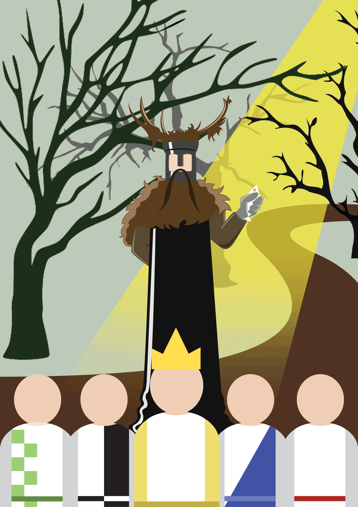
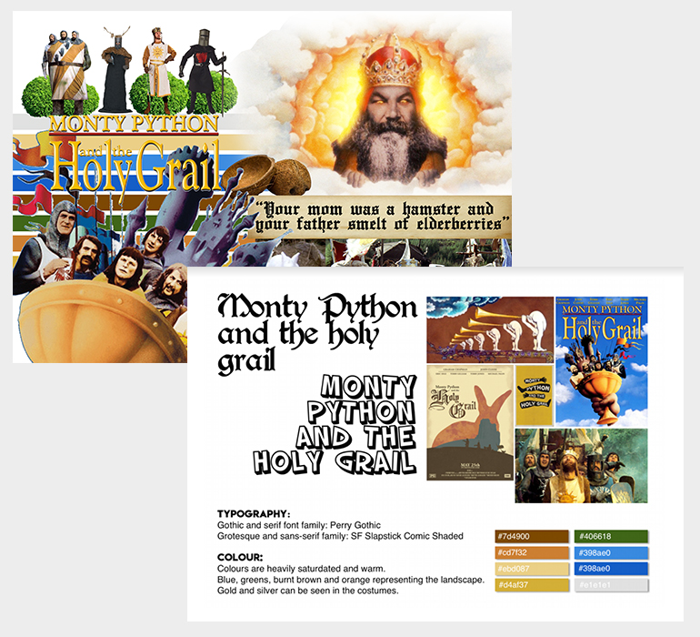
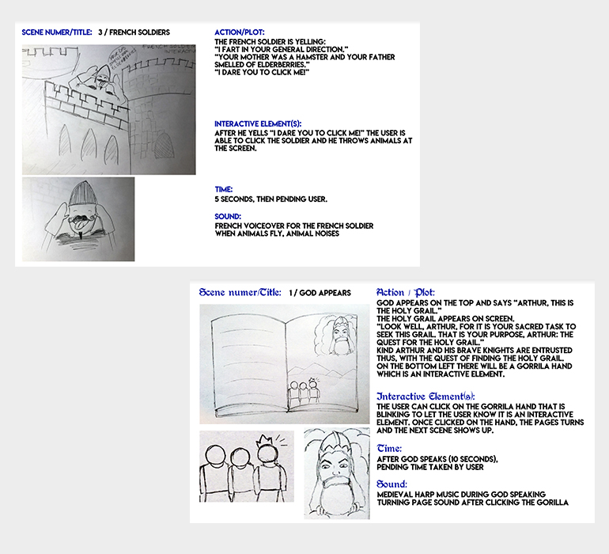
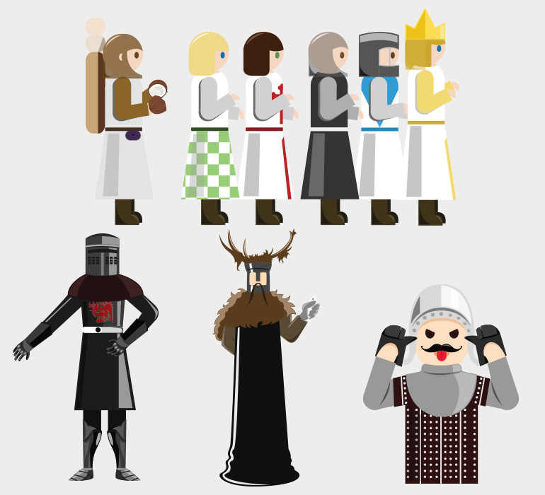
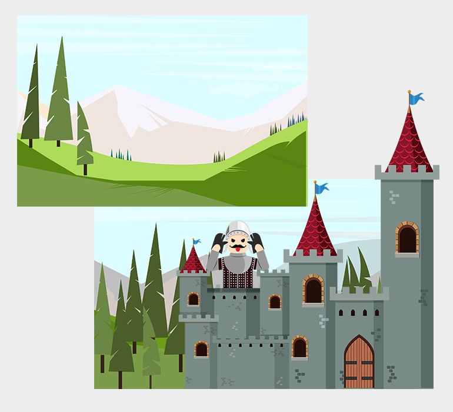

Interactive Poster

SKILLS
PS, AI, CSS, HTML, JS
DESCRIPTION
For this animation project, I had to work within a group. Our task was to create an interactive poster and we chose Monty Python and the Holy Grail for our movie. We thought the movie was very unique and filled with satire humour so we would have a lot of materials to work with. I chose to handle the character designs and sprite animations because I was excited to work with Illustrator.
This is the first project that I got to use the practical skills that I learned from MMD Animation and I am happy with the result.
LINK
http://tiffvoli.com/week_14_monty/
-

Moodboard | Styletile
To prep ourselves with this project, we first watched the movie to refresh our memory. After that, we created the moodboard and styletile as a design guide for our poster. The moodboard included the characters and scenes we would want to put in. -

Storyboard
We chose 4 most iconic scenes from the movie and proceeded to draw them out so we would know what to draw and where to put them. Our main story was having the knights travel through each scene. -

Character Designs
I designed all of these characters based on the movie using Illustrator. I used Illustrator because it's vector therefore all of the images are scalable with the quality being intact. I also used these images for sprite (more info below). -

Background Designs
The backgrounds were also designed in Illustrator. The colours are very satured and natural because most of the settings for the movie is outdoor. We tried not to match the colours from the foreground objects to the background so that everything could be seen. -
Sprite Animation
I learned how to draw sprite animation in the lesson using Illustrator and loved it right away. I spent a while watching this coconut scene several times to mimic the movements onto my sprite. This sprite is made from 5 frames with fast speed. I'm happy about how this turned out.